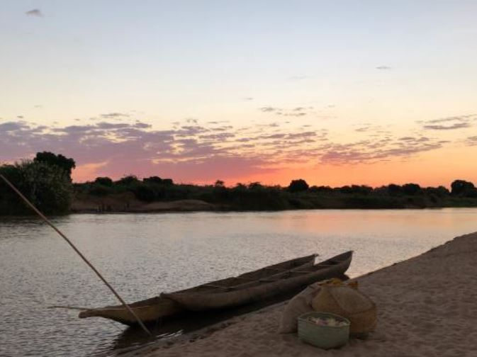
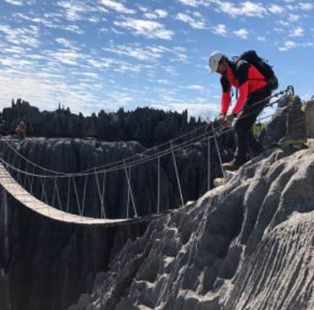
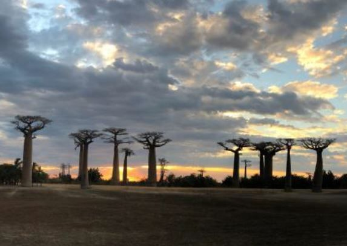
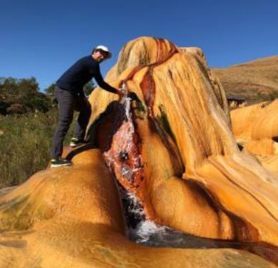
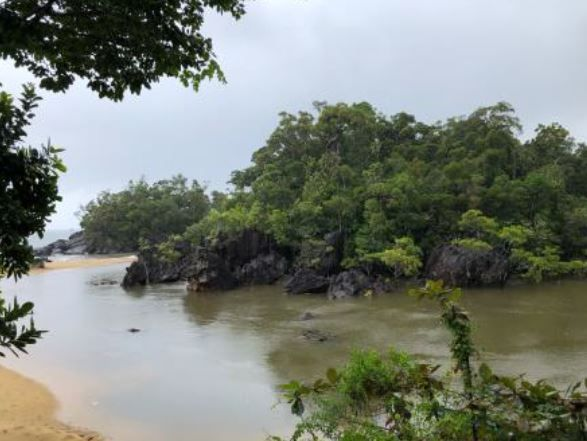
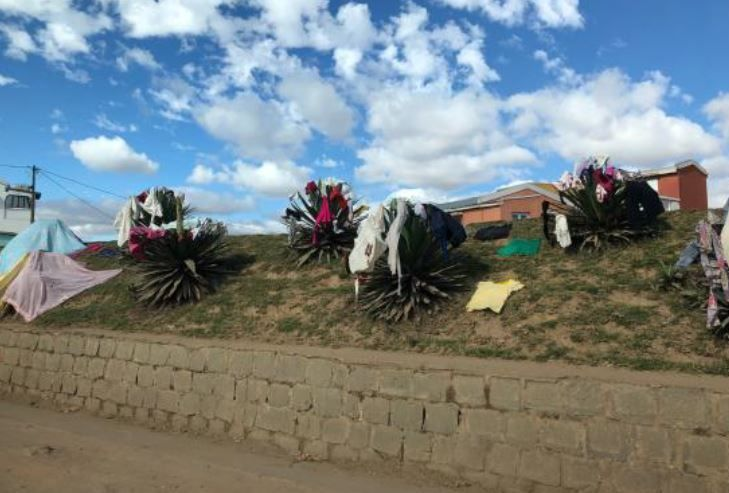
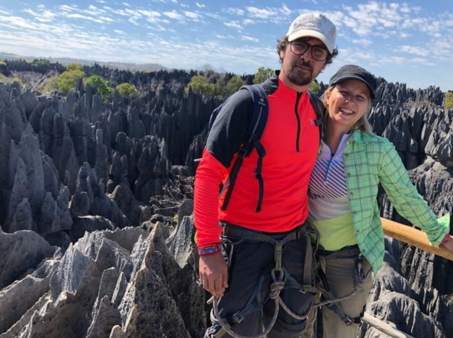

Unsere Ferien in Madagaskar 2018 waren ein absolutes Highlight
Antananarivo-Miandrivazo
Angekommen sind wir am 1. Tag in der Hauptstadt Antananarivo. Frühmorgens fuhren wir los mit dem Auto Richtung Westen. In Antsirabe haben wir zum ersten Mal Zébufleisch gegessen. Weiter ging die Reise durch die Landschaft sowie kleine Dörfer. Überall haben uns die Menschen nett zugewinkt. Mit der Fahrt wurde das Wetter immer wärmer. In Miandrivazo genossen wir die abendliche Aussicht auf den Fluss…

Flussfahrt auf dem Tsiribihina
Schon am Morgen vor dem Sonnenaufgang ging die Fahrt los mit dem Auto über die Buckelpiste zum Fluss. Das lange Boot geschnitzt aus einem einzigen Baumstamm wurde mit unserem Gepäck, drei lebendigen Hühnern, Lebensmitteln, Kochutensilien, Zelt sowie mit Schlafmatten beladen. Zu fünft konnte die Reise losgehen. Schon am ersten Tag haben wir mehrere Krokodile von ganz nah gesehen. Die Landschaft war anfangs noch flach, veränderte sich aber rasch in eine felsigere Canyonregion. Überrascht waren wir als uns auf dem Kanu plötzlich frisch gekochtes Essen serviert wurde. Hatten wir doch gar nicht bemerkt, dass während dem paddeln gekocht wurde.
Am Abend übernachteten wir auf einer Sandbank gegenüber eines grossen Wasserfalls, den wir für eine erfrischende Dusche nutzten. Zwei weitere Tage verbrachten wir auf dem Kanu. Dabei besuchten wir Dörfer, beobachteten Tiere und lernten die einzigartige Natur von Madagaskar kennen. Abends sangen wir Lieder mit dem Staff oder Leuten aus dem Dorf. Am Ende unserer Tour war die Strasse zu schlecht, um uns mit dem Auto abzuholen. So durften wir mit einem Zébu-Car fahren. Was für ein Erlebnis. Wenn der Strassenzustand für ein 4×4 Auto zu schlecht ist schafft es der 8×8 Zébu-Car trotzdem. Eine holprige sowie lange Fahrt mit dem Auto brachte uns zur Fähre nach Bélo-sur-Tsiribihina. Nach einem leckeren Mittagessen ging da Fahrt weiter bis nach Bekopaka.

Tsingy
In Bekopaka haben wir zwei Wanderungen gemacht. Zu den kleinen sowie zu den grossen Tsingys. Was genau die scharfen, spitzen Steine sind kann man nicht gut beschreiben, man muss sie mindestens auf den Fotos sehen. Auch ein paar Lemuren sind wir dort begegnet. Unser Führer hat mit uns auch noch eine Nachtwanderung gemacht, damit wir einige der vielen Nachtaktiven Tiere beobachten können.

Baobaballee
Natürlich war auch der Rückweg wieder holprig und die Fahrt mit der interessanten Fähre ein Erlebnis. Pünktlich zum Sonnenuntergang erreichten wir die Allee der Baobabbäume. Sieben der neun Baobabarten sind einzigartig in Madagaskar. Gerne wären wir noch etwas in Morondava geblieben.

Antananarivo-Ampefy
Mit dem Flieger reisten wir zurück zur Hauptstadt. In einem Tagesausflug besuchten wir den Wasserfall Lilly sowie die Geysire. Das Bad in den sprudelnden warmen Quellen war lohnenswert.

Masoala-Halbinsel
Mit dem Flugzeug ging es weiter nach Maroantsetra. Leider war die Überfahrt zur Insel mit geplantem Nachttrekking sowie Camping am Abend der Ankunft wegen des schlechten Wetters nicht möglich. Am nächsten Morgen gingen wir früh los. 2 1/2 Stunden dauerte die Überfahrt mit dem Motorboot zur Masoala-Halbinsel. Die fahrt war noch um einiges unruhiger als die Autofahrten über die Buckelpisten. Total durchnässt erreichten wir die Traumhafte Lodge am Strand am Rande des Regenwaldes. Leider hat es während vier Tagen nur geregnet. So haben sich auch die Tiere versteckt. Trotzdem haben wir kurze Wanderungen im Regenwald unternommen. Die restliche Zeit verbrachten wir mit einem guten Buch, einem kurzen Ausflug ins Meer oder mit unserem netten Guide. Auf dem Rückweg haben wir eine kurze Regenpause genutzt, um Buckelwale zu beobachten. Toll diese Tiere so nah am Boot zu sehen.

Antananarivo
Nach unserem Flug zurück zur Hauptstadt blieb noch genügend Zeit um den Lemurenpark zu besuchen. Dort konnten wir die Tiere in einer natürlichen Umgebung fotografieren.

Die Ferien in Madagaskar 2018 waren ein absolutes Highlight
Die Freundlichkeit sowie Herzlichkeit der Menschen beeindruckte uns sehr. Die Landschaft war in jedem Teil von Madagaskar anders sowie einzigartig. Es waren besondere Momente in Madagaskar 2018 als wir die Möglichkeit hatten Wale sowie Krokodile in ihrer natürlichen Umgebung von ganz nah zu beobachten. Die Begegnungen mit verschiedensten Menschen des Landes werden uns in Erinnerung bleiben. Gerne kommen wir wieder und bereisen noch andere Teile des Landes.
Nina L. und Raphael M.

Hier finden Sie den Ferienbericht Madagaskar 2018 noch einmal im Original mit vielen weiteren Fotos von der Reise im PDF-Format.